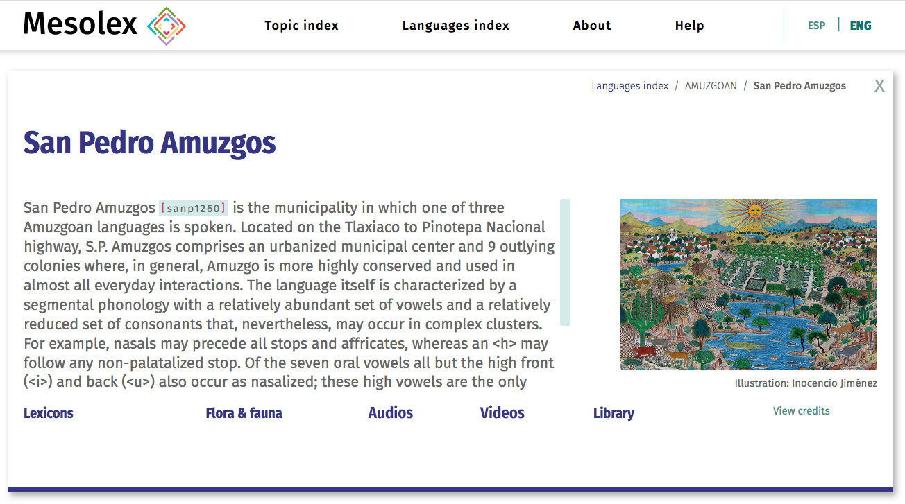

About Mesolex
Objectives and History
Mesolex: Lexicosemantic Resources for Mesoamerican Languages is a multimedia portal that offers all potential users open access to a wide range of resources on Mesoamerican languages. The portal was developed out of dissatisfaction with the resources available to native speakers, the general public, and the academic community to learn about, study, and hear actual audio recordings (transcribed and translated) of the many native languages spoken in the Mesoamerican cultural area. Portal navigation to the resources is organized around two major themes or pathways: (1) Languages (accessed by clicking on the Language Index); and (2) Topics and media (accessed by clicking on the Topic Index). Mesolex is not only a hub for accessing resources but provides innovative tools for discovery and display of these resources. Particularly important are the back‑end tools for all dictionaries (e.g., a finite state transducer, a thesaurus, and a multilanguage search tool) and the open-source program SYLARD, an ELAN-to-HTML conversion tool for line-by-line playback of transcribed and translated digital audio.
The Mesolex portal has been created with the support of a National Endowment for the Humanities, Office of Digital Humanities Level 1 grant (Award HAA-266482-19). Content has been provided by multiple individuals and sources, all credited on the relevant pages. Indeed, a major goal of Mesolex is to provide contributors, particularly native speakers documenting their own languages, a mechanism through which they can disseminate the material that they gather and edit (e.g., theses, articles, lexicons, multimedia including line-by-line audio playback). The ultimate goal of Mesolex is to create a platform that makes it easy for contributors to create language-specific “subportals” and for end users to access the material so deposited through either the language or topic index. Mesolex is not meant to be a permanent archive for long-term preservation but rather a portal to facilitate discovery and access of materials archived elsewhere. Efforts are underway to ensure that Mesolex materials (e.g., dictionaries, transcribed/translated audio) are also archived at institutions capable of long-term, secure preservation. In sum, the goal of Mesolex is to offer a language- and topically-organized lexicosemantic resource center for open access dissemination of lexicosemantic resources while at the same time providing a pathway for the permanent archiving of materials that are not published or otherwise permanently archived.
Topic index
Portal specific tools to facilitate access and discoverability: SYLARD and Search tools for lexical databases
SYLARD (Synchronized Language Annotation Result Display) is open-access software that converts ELAN files (.eaf extension) to HTML for line-by-line playback of audio recordings. End users can configure the display in many ways, as explained in the User Manual, changing, for example, the translated texts that are visible (e.g., from Spanish to English, if the original ELAN file has both languages), or altering the display to a design that the user prefers.
SYLARD has been developed to facilitate easy and direct native speaker, general public, and researcher access to language documentation material often not easily discoverable and difficult to play for individuals not familiar with ELAN software. Under present archiving practices, users need to download an ELAN .eaf file, download the associated audio (.mp3 or .wav), install ELAN on a local computer, link the audio and transcription files in ELAN, and play back through the ELAN interface. This is a challenge for those not familiar with ELAN. SYLARD offers an easy alternative. Discovery of relevant materials in the Mesolex portal is facilitated by a searchable catalogue (with easy-to-create filters by, for example, language); immediate line-by-line playback of the audio material can be through any web browser.
SYLARD can be accessed directly or through the Mesolex Audios module.
back‑end search tools for Mesolex lexicons offer an innovative approach to look-up in Indigenous language dictionaries. The tools address the following problems, each discussed in turn:
- Linguistic and orthographic variation among closely related languages;
- Difficulty of discovery of Western language (usually Spanish or English) glosses
- Searches across Indigenous language dictionaries that are written with different L2 languages
1. Users are often stymied by dictionary look-up because of orthographic and linguistic variation. For example, a native speaker of Nahuatl may search for the headword tlacatl (‘man’) and be frustrated when no results are returned because the dictionary spells this word tla:katl (with the length of the initial <a> marked as long, and the voiceless velar occlusive [k] written as <k>, not <c>). Or, if the dictionary is of Highland Puebla Nahuatl, a user search for <tlacatl> would miss the cognate form <ta:kat>. Highland Puebla Nahuatl has lost <tl>, which is always realized as <t>. Concomitantly, a <t> in Highland Puebla Nahuatl may be realized as either <t> or <tl> in other Nahuatl languages.
Mesolex has integrated language-specific finite state transducers into its back‑end. User-generated searches (e.g., for <tlacatl>) can be processed through these FSTs so that searches automatically discover many common orthographic and linguistic variations without any change to the search input. Mesolex has also integrated, into this same flexible search functionality, neutralization of certain language-specific phonemic distinctions. For example, searches in Nahuatl can ignore vowel length, searches in Mixtec can ignore tonal differences, searches in Mazatec and Totonac can ignore differences in phonation, and searches in Triqui can ignore the contrast between fortis and lenis consonants. All this flexibility is automatic as it is part of the language-specific FSTs that are built into the Mesolex back‑end system.
2. Users may also be frustrated when searches in the Western language, even for the most basic vocabulary, fails to find an Indigenous language equivalent. Often this is because of decisions made by the lexicographer during data entry. Thus a search for <culebra> might yield no hits simply because the entry for ko¹o⁴ in Mixtec, kowa:t in Nahuatl, or lu:wa' in Totonac provided the gloss <víbora> or <serpiente> and not <culebra>. Mesolex has a back‑end thesaurus (word net) that discovers synonyms and concatenates them into the search string. With this functionality, a user who looks for an Indigenous language entry for <culebra>, having activated the back‑end thesaurus, will find all entries that have <culebra>, <víbora>, or <serpiente>. Or a search for <contemplate> would find the Indigenous words glossed as <think>, <ponder>, or similar words that might be in the back‑end thesaurus.
3. Finally, it is often the case that users might want to search across several dictionaries, some of which might use different languages (basically Spanish and English) for the glosses and translations. Mesolex also has a built-in (back‑end) bilingual dictionary that can be activated to search across target languages. Thus, for example, a search for <cat> will find <gato> and a search for <perro> will find <dog>.
The three aforementioned search enhancements (finite state transducer, thesaurus, bilingual equivalences) are facilitate discovery of both Indigenous language headwords (by those who may use different orthographies or speak different language variants) and target language glosses or translations.
Videos
The video module is simply a catalogue of online videos (mostly in Youtube) relevant to any of the terminal languages represented in Mesolex. The administrator of each terminal language portal is free to select and create any links that he or she might wish and the Mesolex video module will integrate this into a searchable catalogue.
Library
The library module is a link to files (for the most part these will be pdfs) relevant a particular terminal language. Thus the portal for the terminal language Yoloxóchitl Mixtec will include much published and unpublished material (e.g., an illustrated ethnobotanical guide) relevant to this language. Again, the subportal administrator can chose what documents to make available (including material in proprietary formats such as Excel).
Flora and Fauna
The Flora and Fauna module is in effect a merged catalogue that include all audio, video, library documents, or lexicons pertinent to ethnobiology. The material for this module is, therefore, included in and also accessible through the Audios, Videos, Library, and Lexicons modules as well as through the language subportals. Thus, for example, the illustrated ethnobotanical guide for Yoloxóchitl can be found through the Yoloxóchitl Mixtec language subportal, through the Library (e.g., filtering for the keyword “ethnobotany”), or from the Flora and Fauna module.
Language Index
Overview
The Language Index is another pathway to Mesolex resources. Through this a user will first access the Language group module (e.g., Amuzgoan, Nahuatl, Maya, Mazatec, etc.) which is a high level taxonomic node in a phylogenetic language tree. The exact node chosen is in some sense arbitrary. Thus Amuzgo‑Mixtecan is not represented but rather slightly lower‑level nodes such as Amuzgoan, Mixtec, and Triqui (Cuicatec might be added at some point, or Mixtec changed to Mixtec‑Cuicatec). Once the user clicks on a language group, they are taken to a list of what may be referred to as “terminal languages”. For example, the Mixtec language group comprises 5 terminal languages plus “Historical Mixtec (proto‑Mixtec)”. Finally, by clicking on any one of the terminal languages, the user is taken to a terminal language page such as that for San Pedro Amuzgos Amuzgo:
As clear above, the footer of terminal language pages presents the Topic modules as they appear in the Topic Index. Accessing the resources through the terminal language page in effect simply filters all resources so that only those pertinent to the language being researched appears when the topical links are clicked.
Finally, for all terminal language pages there is an administrator, often a researcher working on that particular language, who selects the content for the subportal. This individual or individuals are credited along with any institutional support (e.g., a funding agency) that might have helped gather the resources presented.